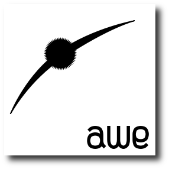

Augmented-reality Widget Engine

What?
Awe is an emotion comparable to wonder but less joyous, and more
fearful or respectful. Awe or "augmented-reality widget engine" aims at
bringing 3D widgets snapped to reality, so you can never lose those
sticky notes on the door, or live weather information on your table!
Virtual widgets all around you keep you updated on meta-information all
the time. Works (best) with an HMD.
Who?
Ravish Malik (ray1claw)
Where?
http://github.com/ray1claw/awe
Hell O World!